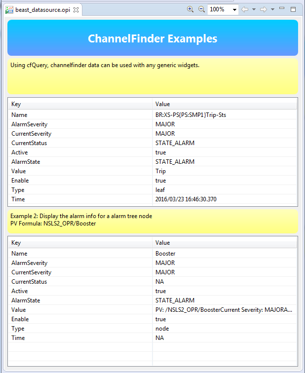

The Alarm System allow users to view and handle the alarms triggered by Process Variables (PVs) on front-end computers (IOCs). There are a set of dedicated applications (Alarm tree, table, and panel) which display alarms and alarm related information (like guidance). These applications also provide the ability to take a set of actions needed to effectively handle an alarm.
Refer to Help Contents -> CSS Applications -> Alarm System for a more detailed description of the beast alarm system
The beast alarm datasource provides a subsection of the alarm information and functionality. This makes it possible for user to access beast alarm information of any other cs-studio application. OPI screens can now embeded information about weather of not an alarm has been acknowledged, etc..
beast:// which can be omitted if configured as the default datasource.
'beast' pvs can be used to connect to any node or leaf from the alarm tree. The alarm tree represents the configured hierarchy of the alarm pv's, the hierarchy consists of
You can create a beast channel for any Alarm Trigger PVs or for any Area, System, Subsystem.
beast://alarm_trigger_pvName
beast://complete_path_to_area
beast://complete_path_to_system
Each active alarm has several properties:
true if severity indicates an active alarm,
false for acknowledged or OK state.true if the alarm/system/pv is enabled.node if the channel is connected to an area or system,
leaf if the channel is connected to a pv.In addition of the table it is also possible to create a channel directly to some of the fields of the table
beast://alarm_trigger_pvName.Enable
beast://complete_path_to_area.Acknowledge
true if severity indicates an acknowledged alarm (AlarmSeverity is *-ack'ed).false for unacknowledged or OK state.
beast://complete_path_to_system.AlarmSeverity
beast://complete_path_to_system.Active
true if severity indicates an active alarm,false for acknowledged or OK state.
beast://complete_path_to_system.RawTable
Writing to alarm pv's can be done by using one of the following key phrases.
The beast datasource can be used to embed beast alarm information into opi screens.
The return value from the beast datasource can be easily displayed by using the VTable widget.
The example screen below was created with the beast datasource and the VTable widget.
Table 1.
PV Formula = beast://LN-RF{MOD:3}Sum-Sts
Table 2.
PV Formula = beast://NSLS2_OPR/Booster
